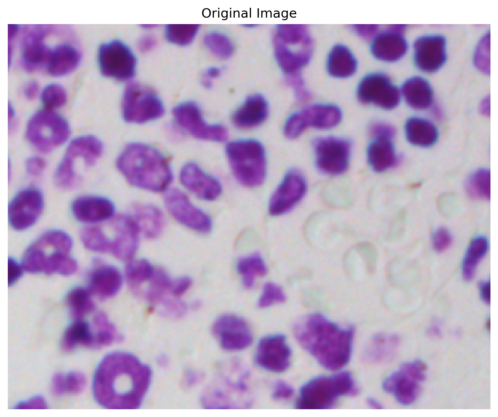
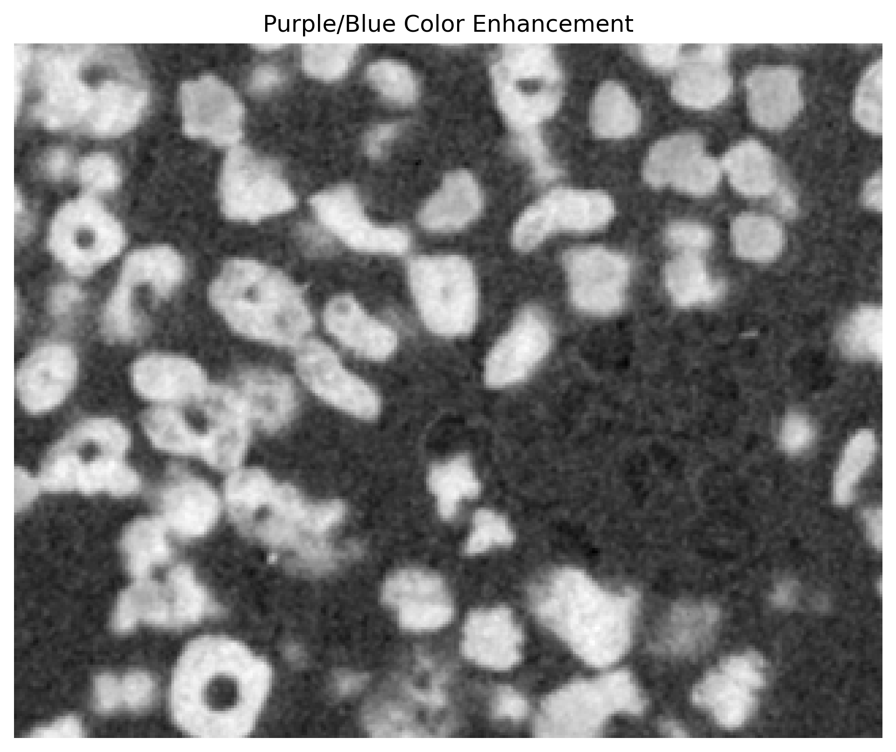
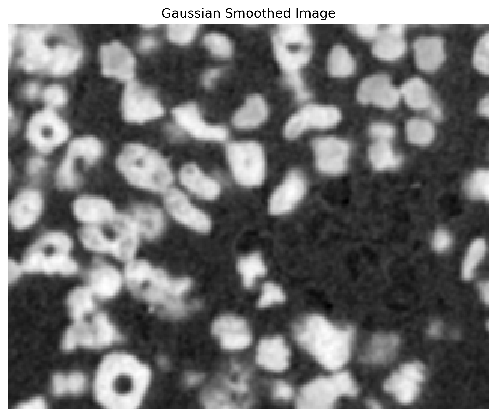
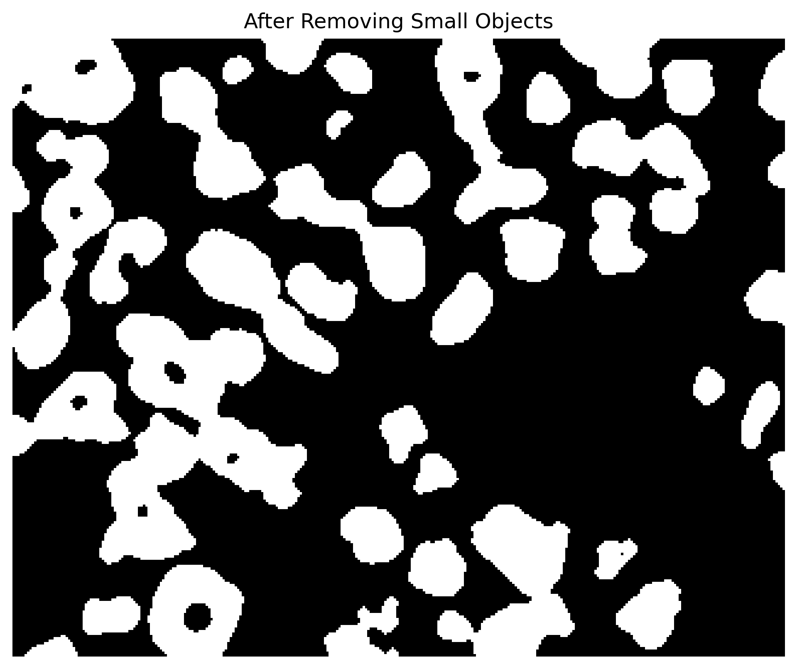
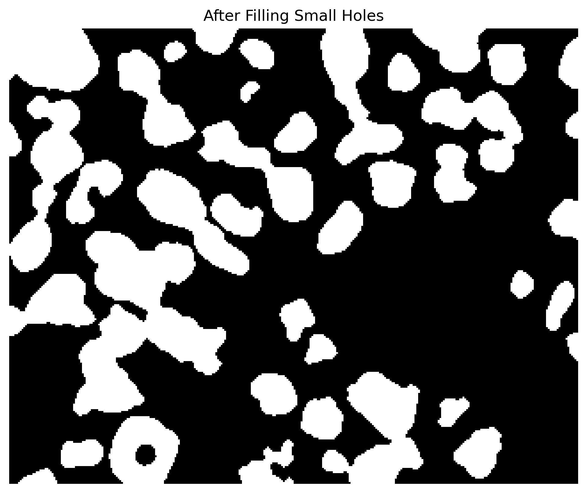
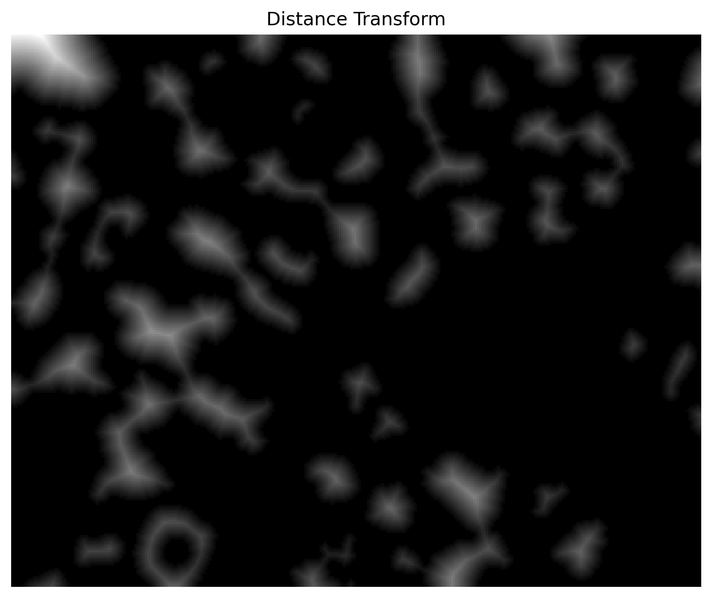
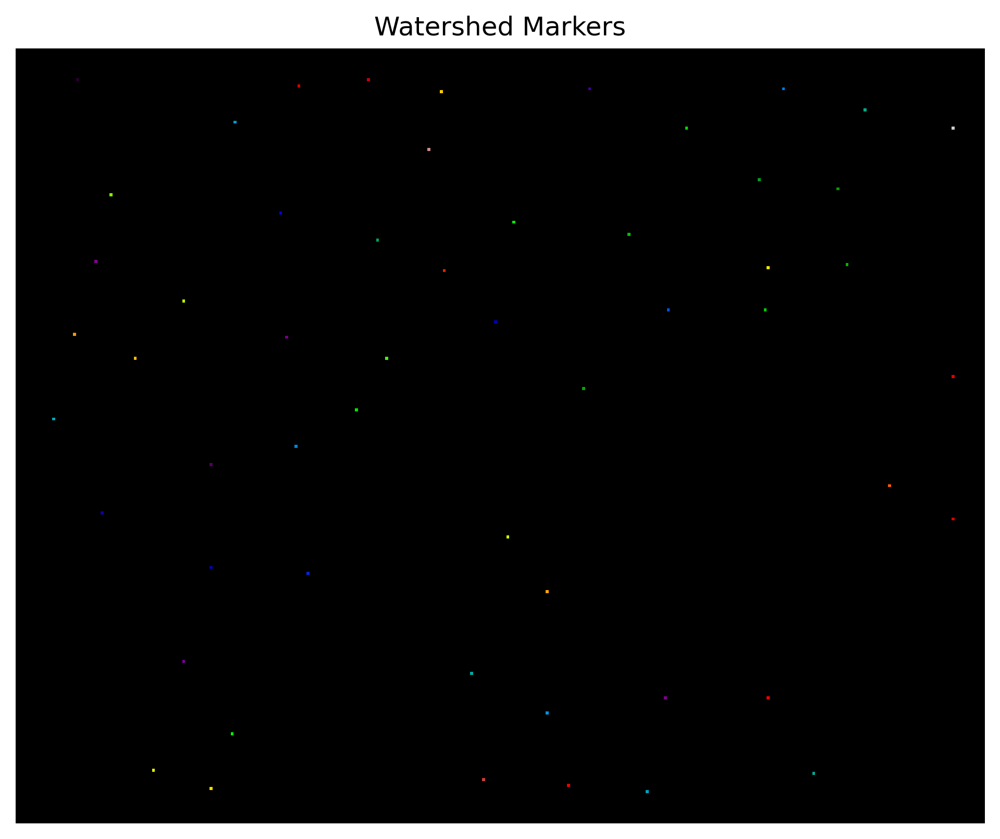
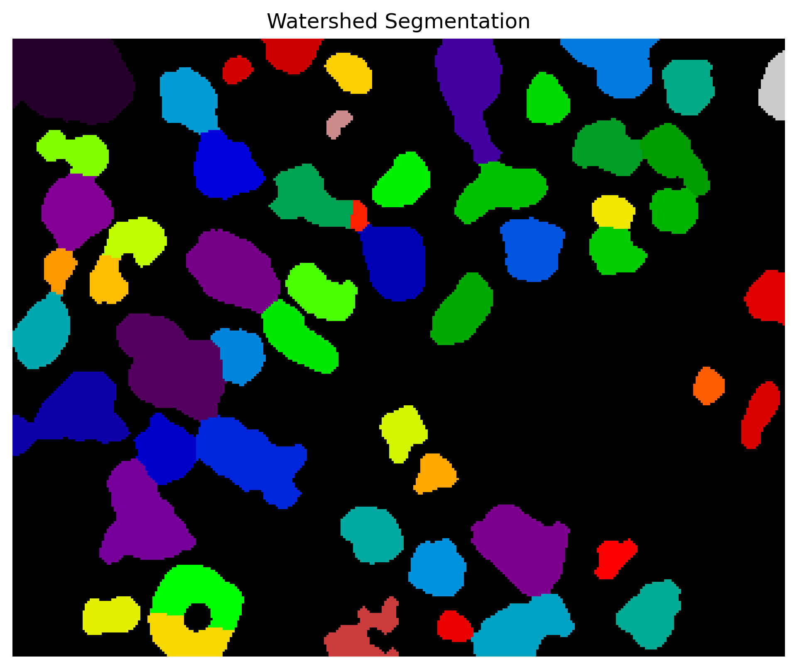
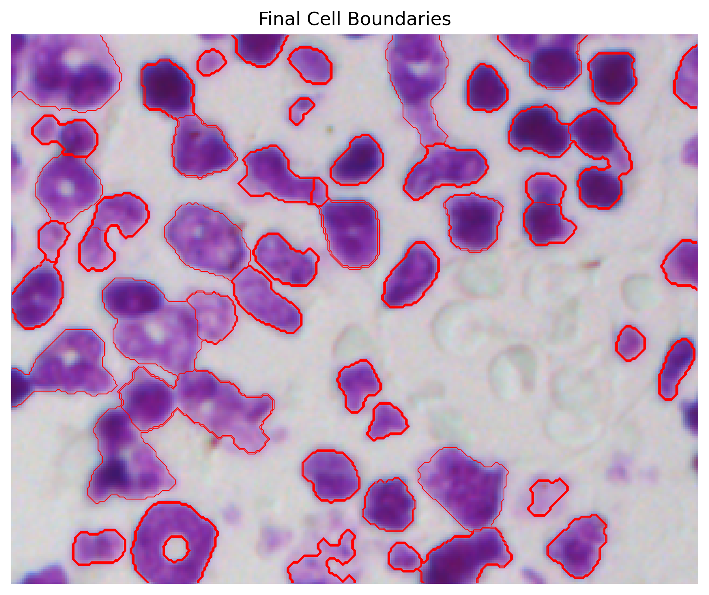

Implementation Overview
The implementation is organized into multiple Python files so that each part of the project has a clear purpose. The main program acts as a controller and allows the user to run different parts of the pipeline from the command line. The three main functions are image selection, cell counting, and morphology measurement.
Main Program
The file main.py controls which method is run. It imports three separate functions:
open_image, count_cells, and measure_cells. Depending on the command-line
argument, the program either selects a microscopy image, counts the number of detected cells, or extracts
quantitative measurements from the segmented cells.
This design makes the project easier to test because each stage of the pipeline can be run independently.
For example, running python main.py open_image saves a selected microscopy image as
cell_img.png. Then, python main.py count_cells estimates the number of cells, and
python main.py measure_cells produces a table of morphology measurements.
Image Selection
The open_image function searches through the dataset folders and randomly checks microscopy
images. Since the dataset contains many different types of images, the program tries to automatically find
an image that is useful for this project. It looks for images with strong contrast and a purple/blue color
pattern, because these images tend to show stained cells more clearly.
To do this, the image is normalized and separated into red, green, and blue channels. The program computes
a simple purple score by comparing the blue and green channel values. It also computes image contrast using
the standard deviation of the grayscale image. If the image passes both the purple-score threshold and the
contrast threshold, it is saved as cell_img.png and used for the rest of the pipeline.
Cell Counting
The count_cells function performs the main segmentation steps. First, it loads the saved image
and normalizes the pixel values. Then, it separates the image into red, green, and blue channels and creates
a purple-enhanced image using the formula:
purple_score = ((red + blue) / 2) - green
This step emphasizes purple and blue stained cell regions while reducing the influence of the background. Gaussian smoothing is then applied to reduce noise before thresholding.
After smoothing, Otsu thresholding is used to automatically separate likely cell regions from the background. Morphological operations are then applied to clean the binary mask. Small objects are removed, small holes are filled, and opening is used to reduce noise.
Watershed Segmentation
One major challenge in cell segmentation is that cells often touch or overlap. If simple thresholding is used, multiple cells may be merged together into one large object. To address this, the project uses distance-transform watershed segmentation.
The distance transform finds pixels near the center of each detected object. Local maxima in this distance image are used as markers for likely cell centers. Watershed segmentation then grows regions outward from these markers, helping split connected blobs into individual cell regions.
After watershed segmentation, the program filters the detected regions by area. Very small regions are treated as noise, while extremely large regions are treated as possible merged objects or false detections. The remaining regions are counted as estimated cells.
Morphology Measurement
The measure_cells function uses the same segmentation pipeline, but instead of only counting cells,
it extracts quantitative measurements from each detected region. The program uses regionprops_table
to create a table of measurements for every labeled cell.
The extracted features include area, perimeter, eccentricity, solidity, major axis length, minor axis length, centroid location, and mean intensity. These measurements describe the size, shape, position, and staining strength of each detected cell.
Two additional measurements are calculated manually: circularity and aspect ratio. Circularity estimates how round a cell is, while aspect ratio compares the major and minor axis lengths to describe how elongated a cell is.
Pipeline Summary
-
Search the dataset for a high-contrast purple/blue microscopy image.
The program scans the dataset and selects an image with strong contrast and visible stained cells.

-
Enhance purple/blue stained regions using RGB channel differences.
This step emphasizes purple/blue stained cells while reducing background influence.

-
Smooth the image with a Gaussian filter to reduce noise.
Gaussian smoothing reduces small image noise before thresholding.

-
Use Otsu thresholding to create a binary cell mask.
Otsu thresholding separates likely cell regions from the background.
-
Clean the mask using morphological operations.
Opening removes small artifacts, small objects are filtered out, and small holes are filled.


-
Use distance-transform watershed to split touching cells.
The distance transform finds likely cell centers, markers identify those centers, and watershed separates connected cell regions.



-
Display final segmented cell boundaries.
The final overlay shows the detected cell boundaries on the original microscopy image.

-
Filter detected regions by area.
Very small regions are removed as noise, and extremely large regions are filtered as likely merged regions or false detections.
-
Count the detected cells.
The remaining valid regions are counted as the final estimated number of cells.
-
Extract morphology measurements for each cell.
For each segmented cell, the program extracts area, perimeter, eccentricity, solidity, circularity, aspect ratio, centroid, and mean intensity.
Why This Implementation Matters
This implementation goes beyond simply detecting bright regions in an image. It combines color enhancement, automatic thresholding, morphological cleanup, watershed segmentation, and quantitative feature extraction. As a result, the project produces both a visual segmentation and measurable biological information about each detected cell.